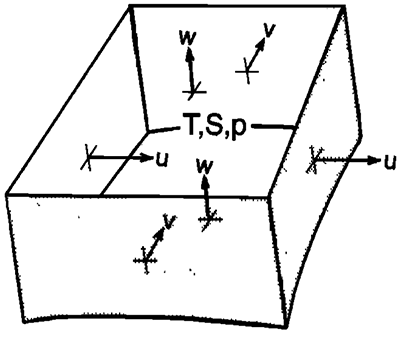

Numerical algorithm
Here we present notes on the governing equations, spatial discretization schemes, time-stepping algorithms, and elliptic equation solvers for Oceananigans.jl. Both hydrostatic (HY) and non-hydrostatic (NHY) algorithms are presented, although the model can only be run in non-hydrostatic mode right now.
Grids and variables
Lay out a Cartesian array $(x,y,z)$ of cubes of horizontal dimensions $\Delta x, \Delta y$ and vertical dimension $\Delta z$ as in the figure below. Define the areas of the cell faces as $A_x = \Delta y \Delta z$, $A_y = \Delta x \Delta z$, and $A_z = \Delta x \Delta y$. Each cell encloses a volume $V = \Delta x \Delta y \Delta z$. Velocities $(u,v,w) = (v_x, v_y, v_z)$ are normal to the requisite face, that is, they are defined on the faces of the cells.

Tracer variables, which are cell averages, are temperature $T$ and salinity $S$ and thus are stored at the cell centers. Pressure $p$ and density $\rho$ are also defined at the cell centers. The faces of the cells are coincident with three orthogonal coordinate axes (Cartesian in this case). Vorticity $\mathbf{\omega}=\nabla\times\mathbf{u}$ and certain intermediate quantities are stored at the cell edges. (In 2D it would more correct to say the cell corners, however, in 3D variables like vorticity $\mathbf{\omega}$ lie at the same vertical levels as the cell-centered variables and so they really lie at the cell edges. In addition to being technically correct, we abbreviate cell centers as $c$ and cell faces as $f$ in subscripts, so edges can use $e$ while corners would conflict with cell centers.)
The cells are indexed by $(i,j,k)$ where $i\in \{1,2,\dots,N_x\}$, $j\in \{1,2,\dots,N_y\}$, and $k\in \{1,2,\dots,N_z\}$ with $k=1$ corresponding to the top and $k=N_z$ corresponding to the bottom. (To solve the equations on the sphere, the "quads" used to grid the sphere are appropriately defined including geometrical information and the $G$'s in the equations have to be modified slightly to include metric terms. But the underlying algorithm remains the same.)
While there are $N$ cells and cells centers per dimension and $N+1$ cell faces and cell edges per dimension, all fields are stored as $N_x \times N_y \times N_z$ fields. The reason for this is that for the case of periodic boundary conditions, the values at face $N+1$ equal the values at face $1$ so there is no need to store an extra face, and for walled boundaries, faces $N+1$ and $1$ both represent walls so again there is no need to store an extra face. This will change for the case of open boundary conditions which are not considered here.
Governing prognostic equations and boundary conditions
The governing equations are the rotating, incompressible, Boussinesq equations of motion. They are an approximation to the full Navier-Stokes equations in a non-intertial reference frame that is appropriate for the ocean and may be written as:
where $\mathbf{v} = (\mathbf{v}_h, w) = (u,v,w)$ is the velocity, $\mathbf{v}_h = (u,v)$ is the horizontal velocity, $\nabla = (\partial_x, \partial_y, \partial_z)$ is the del operator, and $\nabla_h = (\partial_x, \partial_y)$ is the horizontal del operator. Equations \eqref{eqn:horizontalMomentum} and \eqref{eqn:verticalMomentum} are the horizontal and vertical momentum equations respectively. Equation \eqref{eqn:continuity} is the continuity equation expressing conservation of mass. Equations \eqref{eqn:TTendency} and \eqref{eqn:STendency} prognostic equations describing the time evolution of temperature $T$ and salinity $S$. Equation \eqref{eqn:EOS} is an equation of state for seawater giving the density $\rho$ in terms of $T$, $S$, and $p$. The source terms $\mathbf{G}_v = (\mathbf{G}_{vh}, G_w) = (G_u, G_v, G_w)$ represents inertial, Coriolis, gravitational, forcing, and dissipation terms. They can be written as
where $f = 2\Omega\sin\phi$ is the Coriolis frequency, $\Omega$ is the rotation rate of the Earth, $\phi$ is the latitude, $g$ is the acceleration due to gravity, $p'_{HY}$ is the hydrostatic pressure anomaly, $\rho_0$ is a reference density corresponding to an ocean at rest, and $\nu$ is the viscosity. $F_u$, $F_v$, and $F_w$ represent other forcing terms that may be imposed. Note that the buoyancy term $-g(\delta\rho/\rho_0)$ that is usually present in the vertical momentum equation has been expressed in terms of the hydrostatic pressure anomaly $p'_{HY}$ which ends up in the horizontal momentum equations. (This step will be shown in an appendix.)
Similarly, the source terms for the tracer quantities can be written as
where $\kappa$ is the diffusivity while $F_T$ and $F_S$ represent forcing terms.
The associated boundary conditions for the embedded non-hydrostatic models is periodic in the horizontal direction and a rigid boundary or "lid" at the top and bottom. The rigid lid approximation sets $w = 0$ at the vertical boundaries so that it does not move but still allows a pressure to be exerted on the fluid by the lid.
Numerical strategy
To numerically solve the governing equations, they must be appropriately discretized. To this effect a number of strategies are employed to ensure the discretized equations satisfy the same conservative properties that the incompressible Navier-Stokes equations satisfy, and to ensure that the numerical solution is stable.
The main strategies involve the use of a staggered grid and the splitting of the pressure field into three components.
Staggered grid
As shown in the schematic of a single volume and discussed earlier the velocities are defined as averages over faces while other quantities are cell averages stored at the cell centers. This staggered storage of variables is more complicated than the collocated grid arrangement but is massively beneficial as it avoids the odd-even decoupling between the pressure and velocity if they are stored at the same positions. Odd-even decoupling is a discretization error that can occur on collocated grids and which leads to checkerboard patterns in the solutions (See the CFD Online article on staggered grids). Another way to look at this is that the discrete Poisson equation used to enforce incompressibility has a null space. The null space often manifests itself in producing solutions with checkerboard pressure fields. The staggering of variables effectively eliminates the null space; however, when it is used in the context of curvilinear coordinates its consistent implementation is complicated because it requires the use of contravariant velocity components and variable coordinate base vectors [See A. S. Dvinsky & J. K. Dukowicz, Null-space-free methods for the incompressible Navier-Stokes equations on non-staggered curvilinear grids, Computers & Fluids 22(6), pp. 685–696 (1993)].
Splitting of the pressure field
Another strategy employed is to split the pressure field into three components
where the first term, $p_S$, is the surface pressure–-the pressure exerted by the fluid under the rigid lid at the surface; it is only a function of horizontal position and is found by inverting a 2D elliptic Poisson equation. The second term is the hydrostatic pressure $p_{HY}$ defined in terms of the weight of water in a vertical column above the depth $z$
where $g' = g(\delta \rho / \rho_0)$ is the reduced gravity. The third term is the non-hydrostatic pressure $p_{NH}$ which must be found by inverting a 3D elliptic equation analogous to \eqref{eqn:ellipticPressure}. Note that the parameter $q$ in, for example, \eqref{eqn:pressure_split}, is a trace parameter that is set to zero in HY and to one in the NHY algorithm. The methods we use to solve for the various components of the pressure field will be described in the next section.
A related quantity, the geopotential $\phi = p / \rho_0$ is used as required.
Discrete operators
To calculate the various terms and perform the time-stepping, discrete difference and interpolation operators must be designed from which all the terms, such as momentum advection and Laplacian diffusion, may be constructed. These operators introduced in this section are for a Cartesian grid with periodic boundary conditions in the horizontal and a rigid lid at the top and bottom. The operators will change form for other grids such as the cubed sphere.
Difference operators
Difference operators act as the discrete form of the derivative operators. Care must be taken when calculating differences as the difference of a cell-centered variable such as temperature $T$ lies on the faces in the direction of the difference, and vice versa. In principle, there are three difference operators, one for each direction
where the $E$ and $W$ subscripts indicate that the value is evaluated the eastern or western wall of the cell, $N$ and $S$ indicate the northern and southern walls, and $T$ and $B$ indicate the top and bottom walls.
Additionally, three $\delta$ operators must be defined for each direction to account for the staggered nature of the grid. One for taking the difference of a cell-centered variable and projecting it onto the cell faces
and another for taking the difference of a face-centered variable and projecting it onto the cell centers
The third $\delta$ operator of use is the one that takes the difference of an edge-centered variable and projects it onto the cell faces, $\delta^{e \rightarrow f}$, which looks the same as $\delta^{f \rightarrow c}$. While it is computationally redundant, it is included for clarity.
The horizontal difference operators, $\delta_x$ and $\delta_y$, take into account the periodic boundary conditions while the vertical difference operator $\delta_z$ must take into account the rigid lid. In the vertical this is done by imposing that $\delta_z^{c \rightarrow f}f_{i,j,1} = f_{i,j,1}$ and $\delta_z^{f \rightarrow c}f_{i,j,N_z} = f_{i,j,N_z}$.
Interpolation operators
In order to add or multiply variables that are defined at different points they are interpolated. In our case, linear interpolation or averaging is employed. Once again, there are three averaging operators, one for each direction,
Additionally, three averaging operators must be defined for each direction. One for taking the average of a cell-centered variable and projecting it onto the cell faces
and another for taking the average of a face-centered variable and projecting it onto the cell centers
The third averaging operator of use is the one that takes the difference of a face-centered variable and projects it onto the cell edges, $\overline{f}^{f \rightarrow e}$, which is the same as $\delta^{c \rightarrow f}$.
The horizontal averaging operators take into account the periodic boundary conditions while the vertical averaging operator takes in to account the presence of the rigid lid.
Divergence and flux divergence operators
The divergence of the flux of a cell-centered quantity over the cell can be calculated as
where $\mathbf{f} = (f_x, f_y, f_z)$ is the flux with components defined normal to the faces, and $V$ is the volume of the cell. The presence of a solid boundary is indicated by setting the appropriate flux normal to the boundary to zero. In our case, we have already done this in the definition of the $\delta$ operators. A similar divergence operator can be defined for a face-centered quantity.
The divergence of the flux of $T$ over a cell, $\nabla \cdot (\mathbf{v} T)$, required in the evaluation of $G_T$, for example, is then
where $T$ is interpolated onto the cell faces where it can be multiplied by the velocities, which are then differenced and projected onto the cell centers where they added together and then added to $G_T$ which also lives at the cell centers.
Momentum advection operators
The advection terms that make up the $\mathbf{G}$ terms in equations \eqref{eqn:horizontalMomentum} and \eqref{eqn:verticalMomentum} can be mathematically written as
which can then be discretized similarly to the flux divergence operator, however, they must be discretized differently for each direction.
For example, the $x$-momentum advection operator is discretized as
where $\overline{V}^x$ is the average of the volumes of the cells on either side of the face in question. Calculating $\partial(uu)/\partial x$ can be performed by interpolating $A_x u$ and $u$ onto the cell centers then multiplying them and differencing them back onto the faces. However, in the case of the the two other terms, $\partial(vu)/\partial y$ and $\partial(wu)/\partial z$, the two variables must be interpolated onto the cell edges to be multiplied then differenced back onto the cell faces.
Laplacian diffusion operator
Laplacian diffusion is discretized for tracer quantities as
where $\kappa$ is the diffusivity, usually taken to be the eddy diffusivity, and different diffusivities may be taken for the horizontal and vertical directions to account for the differences between horizontal and vertical turbulence.
Viscous terms
Viscous dissipation operators are discretized similarly to the momentum advection operators and so there is a different one for each direction. For example, the vertical diffusion operator is discretized as
where $\nu$ is the eddy viscosity.
[Need notes on boundary conditions.]
Time stepping
Once the source terms are calculated, the time stepping is performed as follows where superscripts indicate the time-step:
The source terms $\mathbf{G}$ are evaluated using the Adams-Bashforth method (AB2) which makes use of time levels $n$ and $n-1$:
AB2 is a linear extrapolation in time to a point that is just, by an amount $\chi$, on then $n+1$ side of the midpoint $n + 1/2$. AB2 has the advantage of being quasi-second-order in time and yet does not have a computational mode. Furthermore, it can be implemented by evaluating the source terms $\mathbf{G}$ only once and storing them for use on the next time step, thus using less memory that higher-order time stepping schemes such as the popular fourth-order Runge–Kutta method. Typically we set $\chi = 0.1$.
The elliptic problem for the pressure
The pressure field is obtained by taking the divergence of \eqref{eqn:horizontalMomentum} and invoking \eqref{eqn:verticalMomentum} to yield an elliptic Poisson equation for the geopotential field,
along with homogenous Neumann boundary conditions $\mathbf{v} \cdot \mathbf{\hat{n}} = 0$ and where $\mathscr{F}$ denotes the right-hand-side or the source term for the Poisson equation.
We solve for the pressure field in three steps. First we find the 2D surface pressure $p_S(x,y)$. Second we integrate vertically down from the surface to calculate the hydrostatic pressure field $p_{HY}(x,y,z)$ according to \eqref{eqn:hydrostaticPressure}. Third, in the NHY model, we go on to solve for the 3D non-hydrostatic pressure $p_{NH}(x,y,z)$. The 3D pressure solve is generally the most computationally expensive operation at each time step. The HY model, however, only involves steps 1 and 2 and is so is much less computationally demanding than NHY.
We outline two methods for finding for finding the pressure field. One, the conjugate gradient method, is currently used in the MITgcm. It has the advantage of being versatile, readily supporting different boundary conditions and complicated geometries involving land boundaries. The second, a discrete Fourier-spectral method, can be used in the NHY submodels which employ a regular Cartesian grid with periodic or Neumann boundary conditions.
Conjugate-gradient method
In the absence of nice boundary conditions (e.g. bathymetry and continental boundaries), a preconditioned conjugate-gradient iterative method is used to solve the 2D and 3D elliptic problems, with the solution of the 2D problem acting as the precondtioner for the 3D problem.
We now describe how to solve for the surface pressure $p_S(x,y)$. By setting $q = 0$ in the momentum equations \eqref{eqn:velocitytimestepping} and summing them over the whole depth of the ocean, invoking the continuity equation \eqref{eqn:continuity} and applying boundary conditions $\mathbf{v} \cdot \mathbf{\hat{n}} = 0$, the following equation for $p_S$ results:
where
Here $\bar{\cdot}^H$ is the discrete analogue of $(1/H) \int_{-H}^0 (\cdot) dz$, a vertical integral over the whole depth of the ocean. The elliptic problem \eqref{eqn:ellipticPS} and \eqref{eqn:S_HY} can be written in the concise matrix notation
where $\mathbf{A}_{2D}$ is a symmetric, positive-definite matrix (A2D has five diagonals corresponding to the coupling of the central point with surrounding points along the four arms of the horizontal $\nabla^2$ Operator). composed of $\mathbf{D}_{\text{div}\;h}$ and $ \mathbf{G}{\mathrm{rad}\;h}$ (matrix representations of the $div'' and$grad'' operators), \mathbf{\phi}S$ is a column vector of surface pressure elements, and $\mathbf{f}_\mathrm{2D}$ is a column vector containing the elements of the right-hand side of \eqref{eqn:ellipticPressure}. The system can thus be solved using a standard conjugate-gradient method, appropriately preconditioned for efficient solution.
In nonhydrostatic calculations a three-dimensional elliptic equation must also be inverted for $\phi_{NH}(x,y,z)$ to ensure that the local divergence vanishes. This is sometimes referred to as a pressure correction. The appropriate discrete form can be deduced in a manner that exactly parallels that which was used to deduce \eqref{eqn:ellipticPressure}. The resulting elliptic equation can be written as
where $\mathbf{A}_\mathrm{3D}$, like $\mathbf{A}_\mathrm{2D}$, is a symmetric, positive-definite matrix representing the discrete representation of $\nabla^2$, but now in three dimensions. $\mathbf{f}_\mathrm{3D}$ and $\mathbf{\phi}_{NH}$ are $(1 \times N)$ column vectors containing the source term and nonhydrostatic pressure, in each of the $N = N_xN_yN_z$ cells into which the ocean has been carved.
Discrete Fourier-spectral method
For the embedded NHY sub-models we can assume periodic boundary conditions in the horizontal and so switch to a Fourier-spectral Poisson solver which is much faster than the conjugate-gradient approach described above. In this approach, the surface and nonhydrostatic pressure can be combined so only a single elliptic problem is solved.
In this method the geopotential field $\phi_{NH+S}$ and source term $\mathscr{F}$ are expanded in terms of multi-dimensional Fourier series with discrete Fourier transforms (to enforce periodicity) in the horizontal and discrete cosine transforms in the vertical (to enforce the Neumann boundary conditions) and Poisson's equation is solved in the frequency domain. In Fourier space, Poisson's equation becomes
where $\hat{\phi}_{NH+S}$ and $\hat{\mathscr{F}}$ are respectively the geopotential and source term in Fourier space, and the form of the wavenumbers $(k_x, k_y, k_z)$ will depend on the boundary conditions imposed. In the case of periodic boundary conditions in the horizontal and Neumann boundary conditions in the vertical on a discrete grid they are given by
These wavenumbers are obtained by discretizing Poisson's equation using second-order finite differences before inserting the inverse Fourier series and then diagonalizing the resulting equation in Fourier space to obtain expressions for the wavenumbers \footnote{This derivation should be detailed in an appendix.}. This specific discretization enforces that the Laplacian of the numerical solution $\nabla^2\phi$ matches $\mathscr{F}$ up to numerical precision and ensures that the velocity field will be divergence-free up to numerical precision, crucial for a stable time-stepping algorithm.
In the spectral method, one Fourier transforms the right hand side $\hat{\mathscr{F}} = \text{DCT}_z \left( \text{FFT}_{xy} (\mathscr{F}) \right)$, then calculates the pressure field in frequency space using \eqref{eqn:spectralPressure}, and then transforms the pressure back to real space to yield $\phi_{NH+S} = \text{IFFT}(\hat{\phi}_{NH+S})$.
Spectral methods require $\mathcal{O}(N\log N)$ operations compared to $\mathcal{O}(N^2)$ operations for the conjugate-gradient solver where $N = N_xN_yN_z$. Moreover, the spectral method returns an exact solution (in the sense that the discrete Laplacian of the solution matches the right hand side) compared to the conjugate-gradient method that can requires many iterations to converge. To fix this when using the conjugate gradient method, a further pressure correction/relaxation is computed. We believe further performance gains can be realized by using batched FFTs running on GPU accelerators.